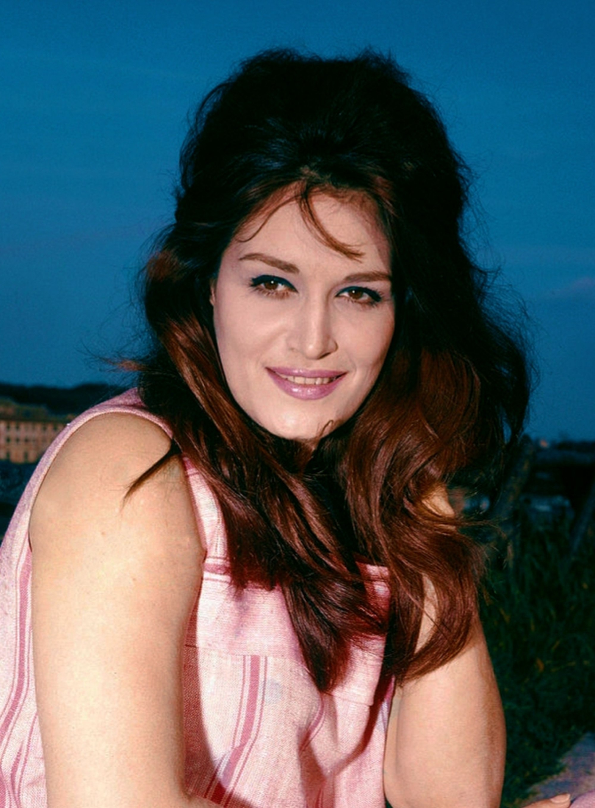

דלידה
Dalida
אטימולוגיה ומקור השם המלא
שם מקורי: יולנדה כריסטינה ג'יליוטי
נולדה בקהיר למשפחת מהגרים איטלקית.
Iolanda: נגזר מהמילה היוונית Iolanthe, שפירושה "פרח סגול" (Violet).
Cristina: מהמילה הלטינית Christianus, שמשמעותה "חסידת המשיח".
Gigliotti: שם משפחה איטלקי נפוץ בדרום, נגזר מהמילה Giglio שפירושה "שושן" (Lily).
שם הבמה (התפתחות): מדלילה לדלידה
בתחילת דרכה בפריז, בחרה בשם הבמה דלילה (Dalila) כמחווה לדמות המקראית של דלילה (שמשמעותה "עדינה" או "מרוקנת כוח"). עם זאת, בעצתו של הסופר אלפרד משאר, היא שינתה את האות האחרונה מ-L ל-D כדי ליצור צליל מודרני, קליט וייחודי יותר, וכך נולד השם דלידה.
ילדות בקהיר, פזילה והטרגדיה המשפחתית
הפזילה והמחסום הפיזי: יולנדה הקטנה נולדה ברובע שוברה שבקהיר. כשהייתה תינוקת בת עשרה חודשים, היא סבלה מזיהום קשה בעיניה שגרם לה לפזילה חריפה (Strabismus). היא נאלצה לעבור מספר ניתוחים כואבים בילדותה וללבוש רטייה על עיניה במשך תקופות ארוכות. ילדי השכונה בקהיר נהגו ללעוג לה ולכנותה "ארבע עיניים", מה שגרם לה לתחושת נחיתות עמוקה ובדידות. היא נשבעה בליבה שיום אחד כולם יסתכלו עליה בהערצה.
האב והכלא המצרי: אביה, פייטרו ג'יליוטי, היה הכנר הראשי באופרה של קהיר. במהלך מלחמת העולם השנייה, כיוון שהיה אזרח איטלקי (מדינת אויב של הבריטים ששלטו במצרים), הוא נלקח למחנה מעצר במדבר המצרי למשך שנים. כאשר שוחרר וחזר הביתה, הוא היה אדם שבור, אלים ומריר. הזיכרון של אביה הנערץ הופך לאדם זר ומאיים הותיר בה צלקת רגשית עמוקה לכל חייה.
ממלכת היופי אל עיר האורות: למרות פגמי הראייה, יולנדה הפכה לנערה יפהפייה באופן עוצר נשימה. בשנת 1954 היא זכתה בתואר "מיס מצרים", זכייה שפתחה לה את הדלת לעולם הקולנוע והביאה אותה להחלטה הגורלית לעזוב את מצרים ולהגר לפריז כדי להפוך לכוכבת בינלאומית.
אידאולוגיה והישגים
הזיקית של השאנסון: דלידה הייתה אמנית של התחדשות מתמדת. היא החלה כזמרת שאנסון ושירי פופ (Ye-ye), עברה לבלדות דרמטיות עמוקות, ובשנות ה-70 הפכה למלכת הדיסקו של אירופה. היא הייתה האישה הראשונה בצרפת שקיבלה "תקליט יהלום" על מכירות של למעלה מ-85 מיליון עותקים בתקופת חייה.
רב-תרבותיות כאידאולוגיה: דלידה שרה ביותר מ-10 שפות (צרפתית, איטלקית, ערבית, עברית, גרמנית ועוד). היא ראתה במוזיקה כלי לחיבור בין עולמות וייצגה את הזהות המהגרת – היא חיה בצרפת, אך ליבה היה בים התיכון ובמזרח. השיר שלה "Salma Ya Salama" הפך להמנון עולמי של שלום ונוסטלגיה מצרית.
הטרגדיה האישית: דלידה כונתה "הדיווה הטראגית". חייה האישיים היו רצופים באובדן: שלושה גברים בחייה שמו קץ לחייהם. למרות ההצלחה הזוהרת על הבמה, הבדידות הכריעה אותה בסופו של דבר, והיא התאבדה בפריז בשנת 1987, כשהיא משאירה אחריה פתק קצר: "החיים הפכו לבלתי נסבלים עבורי... סלחו לי".
השירים הגדולים
• מקורות מחקר:
- Dalida: La femme qui n'était pas née pour mourir - ביוגרפיה מקיפה מאת קתרין ריהואה (Catherine Rihoit).
- ארכיון הקולנוע המצרי (קהיר) - לתיעוד נעוריה ותקופת "מיס מצרים" ב-1954.
- Dalida: Histoire d'une légende - מחקר על ההתפתחות האמנותית שלה מהשאנסון לדיסקו.